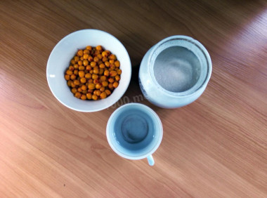
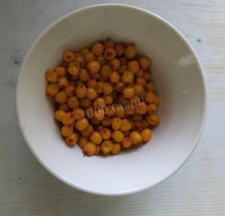
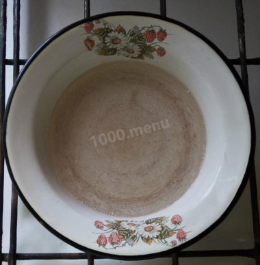
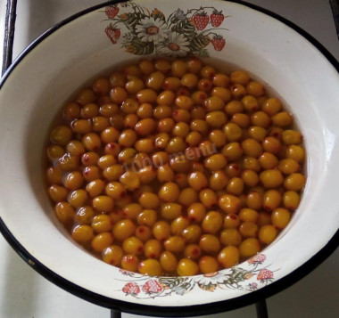
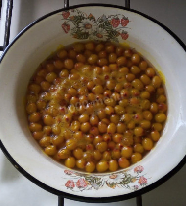
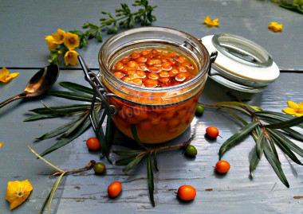

Варенье из облепихи это не только вкусно, но и очень полезно!
Рассмотрим этапы приготовления нашего любимого варенья:

- 1. Как сварить варенье из облепихи на зиму? Подготовьте продукты. Облепиху по возможности берите сочную и спелую, ярко-оранжевую, кисло-сладкую. Воду - лучше бутилированную или фильтрованную.

- 2. Свежесобранную облепиху переберите, удалите хвостики, листочки и мусор. Промойте ягоды, откиньте их на дуршлаг, чтобы стекла вода.

- 3. Начните варить сахарный сироп. Нагрейте в кастрюле из неокисляющегося материала воду, доведите ее до кипения. Всыпьте сахар, сразу перемешайте и уваривайте сироп на медленном огне до полного растворения кристалликов сахара и небольшого загустения сиропа.

- 4. Приготовленные ягоды облепихи опустите в сироп, перемешайте. Варите варенье в течение пяти минут с момента закипания сиропа. Образующуюся на поверхности ягодной смеси пену снимайте шумовкой. Затем огонь выключите. Простерилизуйте банки любым удобным вам способом. Прокипятите крышки.

- 5. Часть ягод лопнет при нагреве, а часть останется в варенье целыми, что сделает это лакомство более красивым и оригинальным. Варенье разложите по заранее простерилизованным баночкам. Баночки закатайте чистыми крышками. Дайте варенью остыть при комнатной температуре и уберите на хранение в холодильник или другое прохладное место. Варенье из облепихи на зиму готово!

- Финал. В зимнее время баночка такого ароматного и полезного облепихового варенья отлично дополнит чаепитие в кругу семьи или может стать основой для сладких пирогов или другой сладкой выпечки. Приятного аппетита!
Облепиха очень полезная и ценная ягода, богатая большим количеством витаминов и микроэлементов. Поэтому многие хозяйки стараются заготовить облепиху на зиму и делают это разными способами: варенье, джем, желе, компот, сок и просто замораживают. В данном случае можно говорить о пользе даже такого продукта, приготовленного из облепихи, как варенье. Потому что в облепихе отсутствуют ферменты, которые разрушают витамин С при высокой температуре, то есть при термической обработке витамины в ягодах сохраняются.
Смотрите и другие рецепты
-
Виды ягод
-
Наиболее популярные блюда из ягод
-
Клубничный мусс
{kind=link}